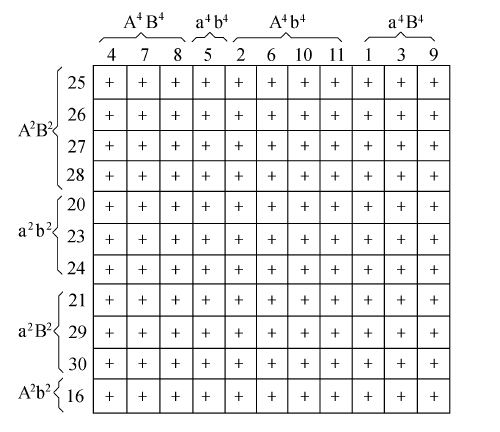
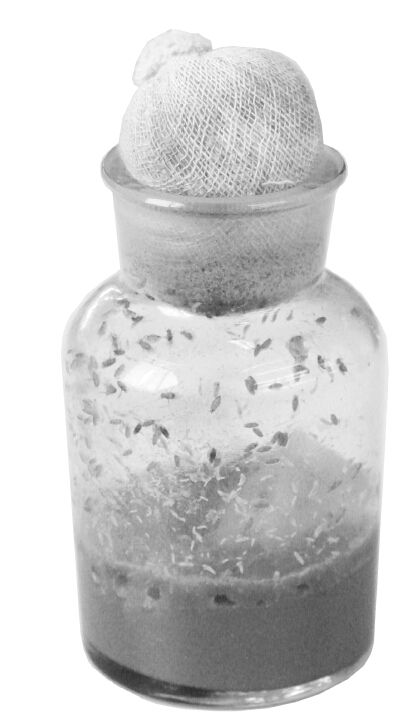

低等植物的性别与性别的意义
雌雄性别名词问题在近来研究某些伞菌或担子菌的结果中显得最突出。按照Hanna近来的说法，在这一群伞菌里，“雌雄性别问题引起真菌学家的注意已经有一百多年了。”M.Bensaude女士（1918）、Kniep（1919）、Mounce女士（1922）、Buller（1924）和Hanna（1925）的发现，揭露了一个非常有趣的情况。为叙述简明起见，这里只详细谈一下Hanna新近的论文。Hanna采用新颖精细的技术，能够从伞菌的菌褶里分离出单个孢子。在粪胶培养基内，每一个孢子长成一株菌丝体。再让各个单孢子型菌丝体一株一株地彼此接触，便能够鉴别出各株的性别。在这些组合里，有某些会彼此联合，形成一株二级菌丝体，其上长着“锁状连合”，从而表示原来的两株是“不同性别”的。这样的菌丝体后来发生子实体或伞菌。另一方面，其他组合，如果配在一处的话，却不能形成有锁状连合的二级菌丝体，而且一般也不产生子实体。作者把这样的联合理解为有关菌丝体是同性别的。
现在把同一品系（即同一地区）的单孢子型菌丝体加以鉴定，结果如下表。两株单孢子型菌丝体联合以后能形成锁状连合的，用“+”代表；不能形成的，用“-”代表。表内菌丝体分为四群（同群的菌丝体安排在一起）。作者把这种结果理解为这个鬼伞Coprinus lagopus物种里一个子实体的孢子，属于四群不同的性别。
像Kniep所首先证明的，上述四群在两对孟德尔式因子Aa和Bb的假说下便能够得到解释。当各个担子形成孢子时，同对的因子分离，每个伞菌会发生AB、ab、Ab和aB四种孢子。每一种孢子发育成遗传组成上相同的菌丝体。如下表所示，只有含两个不同因子的那些菌丝体才能联合，并形成锁状连合。这便意味着一共有四种性别，其中只有性别因子不同的才能结合起来。

也有一个细胞学背景，同以上遗传学假设非常符合。在单孢子型菌丝体的胞质内，存在着很多个胞核。两个菌丝体联合以后，新菌丝体（即次级菌丝体）的胞核两两相接成对。一个合理的假设是：每对胞核中，一个胞核从某个菌丝体得来，另一个则从另一菌丝体得来。假定在四个孢子将要发生时进行了减数分裂，结果，每个孢子发育成一株新的减数菌丝体。这样的情况符合于高等植物和动物中的减数分裂过程，从而使这些霉菌同二倍染色体减少到配子的单倍时所发生的遗传学结果，互相一致。当然，在鬼伞类和其近缘各物种里，二倍—单倍关系还没有得到证明，但是这是已知事实的正确解释，似乎不是不可能的。如果真是这样，那么，遗传因子在伞菌里的分离和在其他植物及动物中的分离，原则上是相同的。
以上关系存在于同一地区的各个品系之间，测验不同地区的品系，得出了非常相似的结果。任何一个品系的一切单孢子型菌丝体，同其他品系的一切单孢子型菌丝体，联合起来（即产生具有锁状联合的菌丝体等等）。下表表示一个地区（加拿大的埃德蒙顿）内一个子实体的11株单孢子型菌丝体。同一地区（温尼伯）内11株单孢子型菌丝体联合，不同区域的各系互相交配时，都得出同一结果。在Hanna所做的组合里，鬼伞有20种性别，如果推而广之，包括其他区域的组合，则性别的数目，无疑地会大大增加。
不仅仅进行了这种杂交，而且也用了杂交过的一些品系进行实验，来进一步测验因子假说。如果把不同品系的因子当做成对的等位因子看待，一个品系的因子称为Aa和Bb，另一品系的因子称为A 2 a 2 和B 2 b 2 ，那么，这两个变种的菌丝体联合后可能产生的杂种，将有16种之多，而每一株杂种菌丝体的行为方式，也将和纯种菌丝体的行为方式相类似，即只能在两株菌丝没有共同的因子时，才能形成锁状联合。

如果我们从习惯的意义上来理解有关的因子，那么，这里便有着规模广泛的两性现象了。我们也不反对这种用法，如果在这里的基础上解释雌雄性别看来是有利的话。就我个人来说，我认为如果对上述结果采用East关于烟草研究的那个解释，把有关的因子称为自交不孕性因子（见下文），那样便会更简单一些。不管各人选用什么文字来描述，原则上解释仍然是一样的。
最近Hartmann在其《相对的性别之研究》论著中描述了关于海藻（长囊水云：Ectocarpus siliculosus）研究的结果。这种植物所放出的自由运动的游动孢子在外形上是一样的，但在以后行动上却分为雌雄两类。雌性孢子迅速静止下来，雄性孢子则继续成群运动一些时候，并且围绕着一个雌性个体（图137a）。

图137a 左侧示成群的雄配子围绕一个雌配子运动，
右侧示雄配子和雌配子的联合过程（仿Hartmann）
一个雄性游动孢子同一个静止中的雌性游动孢子彼此融合。Hartmann先将亲代植株一个一个地隔离开来，等到它们放出游动孢子时，才集体测验异株孢子之间的相互关系。
下表总结了一个典型的实验结果；有联合的，用“+”表示，无联合的，用“-”表示。每一种孢子用其他各种孢子，逐一检验。在大多数例子里，某一株的游动孢子对别株的孢子或者一贯表现雄性行为，或者一贯表现雌性行为，不过在少数例子里，其游动孢子在某些组合里呈雌性作用，在另一些组合里却呈雄性作用。例如4号（下表左方）同13号之间的结果，同它们在其他组合里的反应，是不一致的。另一个例外是35号同38号（下表右方）之间的反应，从两者其他行为上看，都可以称为雄性，但是两者彼此间却呈雄性和雌性的反应。Hartmann根据各种个体在不同组合中所形成的群数多少，把某些个体说成是强雌性，而另一些个体则说成是弱雌性，并作出结论，认为弱雌性对于强雌性起着雄性的作用，而对于强雄性则起着雌性作用。这些关系究竟受到年龄因子（例如静止下来）或环境因子多大影响，还是不十分了解的，虽然Hartmann从检验游动孢子中知道这种关系天天维持原状，似乎排斥了这样的解释。这种材料可惜不适于进行有关因子的遗传学分析。某个体的配子的迅速静止，是否能充分表示其“性别”，即使能表示，弱雌性又如何变化为有雄性的作用等等，也是不明确的。不过同一植株的配子不能相互交配，这种现象似乎属于自交不孕和有关的杂交孕育的同一范畴。把这当做性别的标准，在目前也许主要是依赖于个人的兴趣和定义。就我个人来说，如果把性别一词，不用于普通所谓的性别现象，而用于配子联合与不联合的现象，那么，不但不能阐明有关的问题，反而使问题混乱起来。

现在不妨提出一个问题，即把鬼伞的菌丝连合以及水云（Ectocarpus）的孢子联合中的有关因子称为自交不孕因子，而不称为性因子，是不是会更简单一些，更不容易引起混乱呢？East近来关于烟草自交不孕性研究的重大结果，已经为显花植物中多次研究过的自交孕育和杂交孕育问题，第一次奠定了证据确凿的遗传学基础。显花植物的这些现象，在许多方面，同鬼伞和水云中配子的联合相似，并且两者过程的进行方法虽然可能不完全相同，但是两者的遗传学和生理学背景却很可能是基本上相同的。
East和Mangelsdorf用了几年的工夫研究过Nicotina alata和N.forgetiana两种烟草杂交中的自交不孕性遗传问题。他们在一篇简短的报告里总结了这项研究。这里只能提到最一般性的结论。他们采用特殊操作，把自交不孕的个体育成几种自交的、纯合的品系，维持到12个世代之久，由此得到了适合于检验这个问题的材料。只提出一个族的类型的结果作为一个例子。有a、b、c、三类的个体，任何一类的每个个体，对于同类的其他个体，都表现自交不孕性，而对于其他两类的每一个个体，却是可以孕育的；不过由正反交产生的后代却不相同。例如a♀同c交配，只产生b和c两类个体，而c♀同a交配却只产生a和b个体。两类个体的数目总是一样多的，但是后代里却从未看到母型个体。解释是这样的：假定这一族有S 1 S 2 S 3 三个等位基因，如果a类＝S 1 S 3 ，b类＝S 1 S 2 ，c类＝S 2 S 3 ，如果每一类植株的雌蕊柱头只能刺激含有异类自交不孕因子的花粉的生长，则实验结果便得到了一致的说明。譬如植株c（S 2 S 3 ）只对于含S 2 S 3 以外其他因子的花粉，供给充分刺激。只有含S 1 因子的花粉才能穿过花柱，同卵子受精。子代将得S 1 S 2 （b类）和S 1 S 3 （a类）为数各半。在反正交中a♀（S 1 S 3 ）同c（S 2 S 3 ）相配，只有S 2 花粉才能穿入卵内，产生S 1 S 2 （b）和S 2 S 3 （c）。以上结果可代表其他各族各类的实验，说明了为什么子代里没有雌型组合，说明了为什么正反交的子代有所不同，也说明了为什么不论父方是哪一类，子代的两类个体（没有母型）在数目上总是一样多的。
有几种方法来检验这个假说是否合理。检验结果都证实了这个假说。这种令人信服的分析，是经过了细心计划的遗传学实验的结果，对于75年多来学者们未能解决的受精问题作出了头等的贡献。这不仅是这个例子的一个精辟的遗传学分析，而且也深入了解了单倍型花粉管和双倍型雌蕊组织之间的生理反应。直接观察已经证明：花粉管在雌蕊组织内的生长率是符合于差等生长率确实存在这项见解的。目前还不知道这种关系的性质，不过有理由可以假定它是化学性的。在低等植物里，不同遗传性的菌丝体互相联合时的自交不孕性，可能用相同的或类似的化学反应及其遗传学基础来解释。如果这种说法能够成立，那么，遗传学问题的主要对象便是孟德尔式的自交不孕因子了。要把这些因子说成是性别因子，至少是习惯上应用在雌雄异体生物躯体差异方面的性别因子，这种见解的价值似乎是可以怀疑的。确实不错，在这些差异里，也有产生以互相联合为主要机能的精子和卵子的那些差异，但是，就一般人所理解到的说来，这些机能同雄性和雌性个体体质上所涉及的机能比较，却是不够鲜明的。

饲养在瓶子里的果蝇（李凤霞提供）